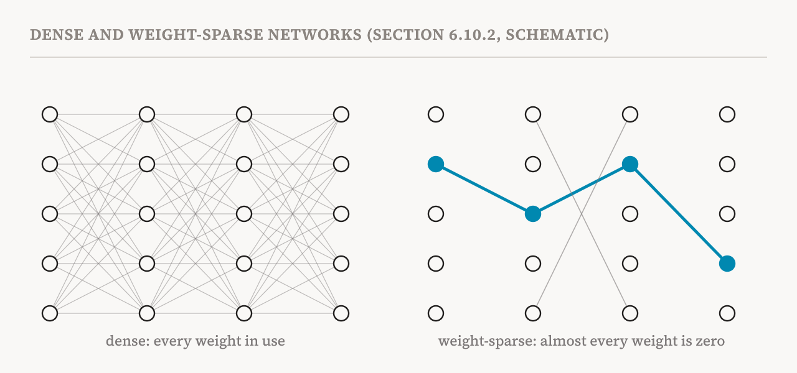
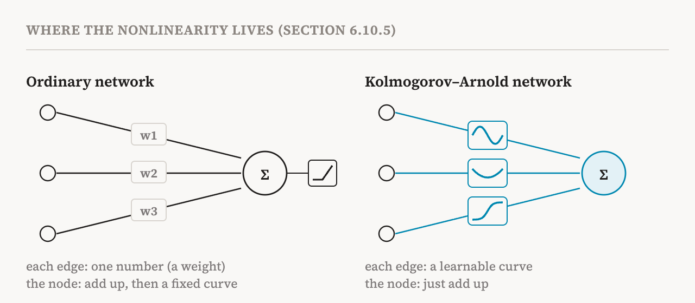

The methods of parts 10 to 14 share one premise: a trained model's representations are too tangled to read directly, so interpretability has to be applied afterwards, to recover simpler units. This part covers section 6.10 of the book (pages 50–53), which describes a research programme that turns that premise around. It asks whether deep networks can instead be designed to be mechanistically interpretable by construction. Part 8 introduced the idea briefly: superposition happens because ordinary architectures allow it, so architectures could be changed to discourage it.
The book makes an important framing point first. Interpretability is a spectrum, not a yes-or-no property. None of these designs, at least in their current form, makes a model's computation completely or immediately understandable. What they do is make models easier to analyse, and make sure the analysis keeps more of the original computation than an after-the-fact approximation such as an SAE can.
The book describes five approaches. Three impose sparsity at different levels: on features, on weights and on attention. The other two change the basic building blocks of the computation.
Feature sparsity: SoLU
The softmax linear unit, or SoLU, from 2022, was an early attempt. It is an activation function for the MLP that multiplies each neuron's value by a softmax taken across all the neurons in the layer. The softmax makes the neurons compete: when one neuron gets a large value, the others are pushed down. Neuroscientists call the similar effect in brains lateral inhibition. The competition encourages some neurons to specialise and dominate, and indeed SoLU increased the share of monosemantic neurons that matched human-readable concepts.
But it also revealed something unwelcome. The neurons pushed down to small values were still polysemantic, with many features packed into them, and a later layer normalisation step could scale them back up, restoring the polysemanticity. The book calls this smuggling. It suggests that putting constraints on one part of the network may not remove the network's incentive to compress information through superposition; the superposition just moves somewhere else. That motivates constraints that act on the whole network, such as the next one.
Weight sparsity
A weight-sparse transformer, in a 2026 study, makes sparsity a structural rule for the weights themselves. After every training step, within each weight matrix, it keeps only the weights with the largest magnitudes and sets the rest to exactly zero. The allowed number of non-zero weights starts at "all of them" and is tightened gradually during training down to the target. The finished model has most of its weights at exactly zero, so the computation that remains is much easier to break into small circuits for particular tasks.

The gains can be large. In very sparse regimes, with fewer than 1% of weights active, each neuron receives input from far fewer neurons upstream, and the circuits for particular capabilities become much smaller. Ablation experiments, which replace parts of the model with their average values, confirmed that these circuits are both necessary and sufficient for the behaviours they implement, in the sense part 12 introduced.
There is a trade-off, and the study measured it. More sparsity makes the model easier to decompose but hurts its performance, so there is a frontier of best possible combinations of capability and interpretability. The encouraging finding is that larger models push that frontier outwards. At the same performance, a larger sparse model can have much smaller, more interpretable circuits; at the same interpretability, it can be more capable. That suggests scaling up model size together with sparsity could lead to models that are both capable and interpretable. The book notes two limits: keeping models interpretable beyond tens of millions of non-zero weights is still hard, and weight-sparse training currently needs much more compute than ordinary training.
Attention sparsity
In an ordinary transformer, attention patterns are usually diffuse: each position spreads a little attention over many others. Diffuse patterns are hard to read and hard to audit. Attention-sparse training tries to make each head attend to only a few positions. One 2025 model, a "world model" built around objects called SPARTAN, was trained with a penalty on the number of non-zero attention weights, under a constraint that its performance match that of a dense version. A 2026 study adapted the technique to fine-tune an already trained language model so that its attention becomes sparse.
After this training, each head attends only to specific tokens, and performance stays close to the original. That suggests many of the faint attention weights in ordinary models may be redundant noise. Sparser attention also helps the circuit-tracing methods of part 17: it reduces the number of components that sit between features in an attribution graph, making the graphs easier to analyse.
New building blocks: MOLT
The remaining two approaches ask what the basic units of computation should be. One recent example is the sparse mixture of linear transforms, or MOLT, which shifts the goal from extracting features to extracting transformations.
The motivation is that some tasks are naturally described not by things but by operations: "add 3", or "rotate this vector". SAEs and transcoders describe activations as combinations of features. For such tasks, we would rather know how the model turns one activation into another. MOLT replaces an MLP with a sparse mixture of learned linear transformations, matrices that each perform one operation, of which only a few are used for any given input. The unit of analysis becomes the transformation. In a task of modular arithmetic, for instance, MOLT can represent addition as a learned rotation, which matches the underlying algorithm (the circles of part 7) more directly than a collection of features for individual numbers would.
New building blocks: Kolmogorov–Arnold networks
Kolmogorov–Arnold networks, or KANs, are one of the most radical departures from standard architectures. In an ordinary network, each connection carries a single number, a weight. A neuron multiplies its inputs by their weights, adds them up, and applies a fixed nonlinear function. A KAN, inspired by a mathematical theorem of Kolmogorov and Arnold about building functions of many variables out of functions of one, puts learnable nonlinear functions on the connections instead. Each connection carries a small curve, typically built from smooth pieces called B-splines, and each node simply adds up what its incoming curves produce.

This makes the structure explicitly compositional. Every nonlinearity is a function of a single input and can be plotted directly on its connection. Researchers can then apply symbolic regression, which searches for a formula that matches a curve, to read off what the network has learned; KANs have been used this way to rediscover known equations from physics. Training KANs is currently more expensive than training ordinary MLPs, and they have not been convincingly shown to work at the scale of large language models. But the book sees them as pointing towards an ambitious goal: networks whose parameters correspond to mathematically meaningful functions.
The five approaches together
| Method | Approach | What it gains | Main limitation |
|---|---|---|---|
| SoLU | A softmax-gated activation function | More monosemantic neurons | Layer normalisation smuggles superposition back in |
| Weight sparsity | Most weights forced to exactly zero | More monosemantic neurons and much smaller circuits | Training instability; hard to scale |
| Attention sparsity | A penalty on non-zero attention weights | Readable attention patterns | Needs fine-tuning of a trained model |
| MOLT | A sparse mixture of linear transforms | Shows the operations a model performs | The matrices themselves can be complex to analyse |
| KANs | Learnable curves on the connections | Formulas can be extracted | Unproven at the scale of large language models |
The end of the feature group
The book closes its chapter on features with a reminder that applies to all six parts of this group. Whether features are recovered afterwards or encouraged by design, they are units of analysis, not complete explanations of how a model works. An explanation also needs to say how these units interact and influence one another to produce a behaviour. That is the job of circuits, which the next group of parts takes up.
| Term | Meaning |
|---|---|
| Interpretability by design | Building models whose computation is easier to analyse, instead of untangling them afterwards |
| SoLU | An MLP activation that makes neurons compete through a softmax |
| Lateral inhibition | Active units suppressing their neighbours, as in brains |
| Smuggling | Superposition moving to another part of the network when one part is constrained |
| Weight sparsity | Training with most weights forced to exactly zero |
| Pareto frontier | The set of best possible trade-offs between two goals, here capability and interpretability |
| Diffuse attention | Attention spread thinly over many positions |
| MOLT | A sparse mixture of linear transforms; it makes operations, not features, the unit of analysis |
| KAN | A Kolmogorov–Arnold network, with learnable curves on its connections instead of single weights |
| Symbolic regression | Searching for a mathematical formula that matches a learned function |
Next, part 16 starts the group on circuits, with the main methods for finding them: activation patching and its descendants.